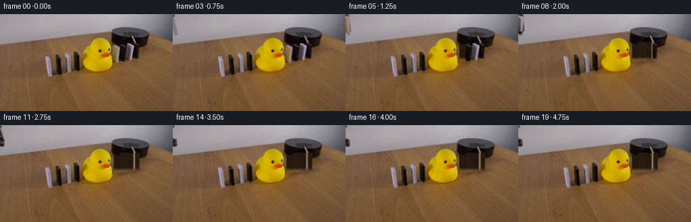
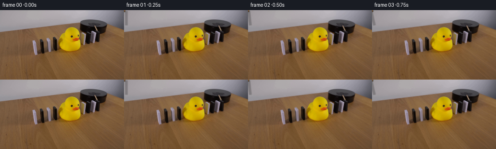
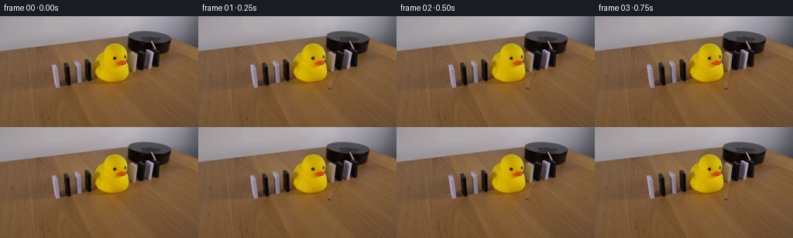
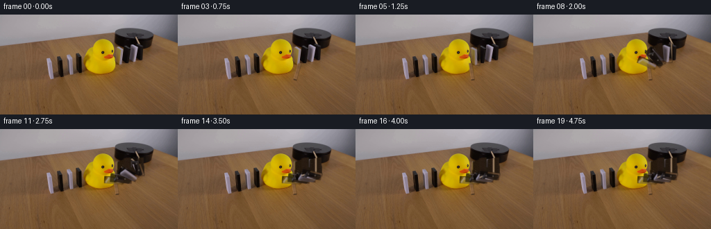
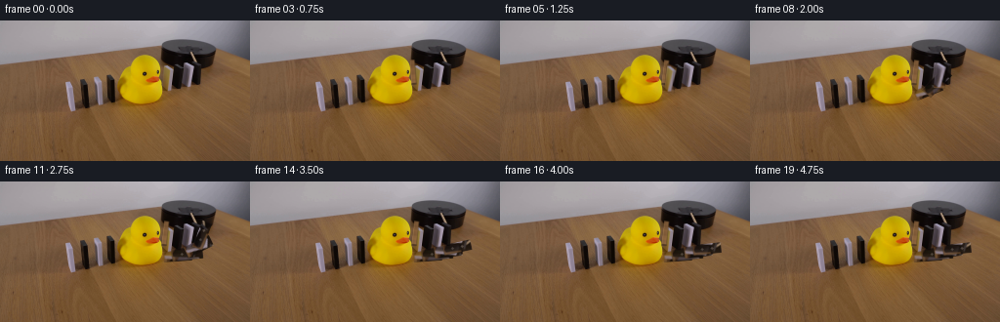
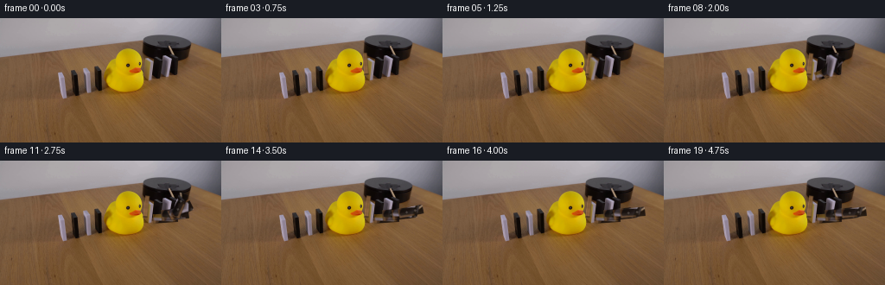
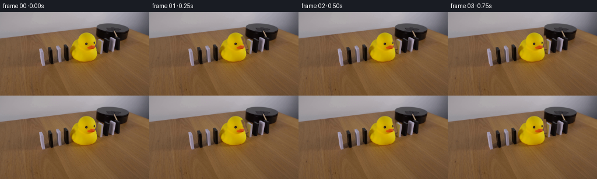

CODING AGENTS AS PIXEL WORLD MODELS
traex/DeepSeek-V4.1-Flash · 0055
点击播放 · 原生 RGB 像素
逐轮保存的候选
回放视频、检查图与代码变化。
每份候选均可单独播放。实际图片检查记录在下方工具轨迹中。
候选 01播放与检查图
点击播放 · 原生 RGB 像素


展开代码变化
--- 上一保存版本
+++ 本次保存版本
@@ -0,0 +1,335 @@
+from pathlib import Path
+
+import cv2
+import numpy as np
+from PIL import Image
+
+import artifact_io
+
+
+ROOT = Path(__file__).resolve().parent
+WIDTH, HEIGHT, FRAMES, FPS = 256, 144, 20, 4
+SUPERSAMPLE = 4
+
+
+DOMINOES = [
+ {
+ "box": (169, 45, 177, 72),
+ "pivot": (173.0, 71.0),
+ "start": 4,
+ "angles": (8, 28, 58, 80, 87, 89),
+ "light": 1.00,
+ },
+ {
+ "box": (178, 42, 188, 70),
+ "pivot": (183.0, 69.0),
+ "start": 5,
+ "angles": (5, 20, 48, 72, 84, 88),
+ "light": 0.96,
+ },
+ {
+ "box": (189, 42, 198, 68),
+ "pivot": (193.5, 67.0),
+ "start": 7,
+ "angles": (5, 20, 48, 72, 84, 88),
+ "light": 1.00,
+ },
+ {
+ "box": (199, 41, 206, 66),
+ "pivot": (202.5, 65.0),
+ "start": 9,
+ "angles": (5, 20, 48, 72, 84, 88),
+ "light": 0.96,
+ },
+]
+
+
+def angle_at(frame_index, domino):
+ if frame_index <= domino["start"]:
+ return 0.0
+ step = frame_index - domino["start"] - 1
+ schedule = domino["angles"]
+ if step >= len(schedule):
+ return float(schedule[-1])
+ return float(schedule[step])
+
+
+def sprite_alpha(height, width):
+ alpha = np.ones((height, width), dtype=np.float32)
+ if width > 2:
+ alpha[:, 0] = 0.55
+ alpha[:, -1] = 0.72
+ if height > 2:
+ alpha[0, :] *= 0.72
+ alpha[-1, :] *= 0.88
+ return alpha
+
+
+def extract_sprites(image):
+ sprites = []
+ for index, domino in enumerate(DOMINOES):
+ x0, y0, x1, y1 = domino["box"]
+ sprite = image[y0:y1, x0:x1].astype(np.float32)
+ height, width = sprite.shape[:2]
+
+ # A restrained bevel makes the dark blocks legible as they leave the
+ # dark platform, without inventing a different material.
+ if index in (1, 3):
+ sprite[:, 0] = np.clip(sprite[:, 0] * 1.16 + 8.0, 0, 255)
+ sprite[0, :] = np.clip(sprite[0, :] * 1.12 + 5.0, 0, 255)
+ sprite[:, -1] *= 0.82
+ sprite[-1, :] *= 0.84
+ center = width // 2
+ cv2.circle(sprite, (center, max(2, height // 3)), 1, (89, 81, 76), -1)
+ cv2.circle(sprite, (center, min(height - 3, 2 * height // 3)), 1, (73, 68, 65), -1)
+ else:
+ sprite[:, 0] = np.clip(sprite[:, 0] * 1.04 + 2.0, 0, 255)
+ sprite[:, -1] *= 0.88
+
+ sprites.append(
+ {
+ "rgb": sprite,
+ "alpha": sprite_alpha(height, width),
+ "pivot_local": (
+ domino["pivot"][0] - x0,
+ domino["pivot"][1] - y0,
+ ),
+ }
+ )
+ return sprites
+
+
+def make_background_plate(image):
+ """Rebuild the strip behind the moving dominoes from adjacent scene pixels."""
+ plate = image.astype(np.float32).copy()
+ mask = np.zeros((HEIGHT, WIDTH), dtype=np.uint8)
+ for domino in DOMINOES:
+ x0, y0, x1, y1 = domino["box"]
+ cv2.rectangle(mask, (x0 - 1, y0 - 1), (x1, y1), 255, -1)
+
+ # The right-hand row stands in front of a dark platform at its top and the
+ # wooden table at its base. Reconstruct that vertical material transition.
+ dark_source = np.median(image[37:41, 166:208], axis=0)
+ wood_source = np.median(image[75:79, 166:208], axis=0)
+ rng = np.random.default_rng(17)
+ noise = rng.normal(0.0, 1.65, size=(31, 42, 1))
+
+ for local_y, y in enumerate(range(41, 72)):
+ if y <= 63:
+ dark_weight = 1.0
+ elif y <= 68:
+ dark_weight = float((68 - y) / 5.0)
+ else:
+ dark_weight = 0.0
+ dark_weight = 0.78 * dark_weight
+ fill = (
+ dark_source[None, :, :] * dark_weight
+ + wood_source[None, :, :] * (1.0 - dark_weight)
+ + noise[local_y]
+ )
+ plate[y, 166:208] = np.clip(fill, 0, 255)
+
+ # Keep the untouched first frame outside the repair mask.
+ mask_float = cv2.GaussianBlur(mask.astype(np.float32) / 255.0, (0, 0), 0.65)
+ mask_float = mask_float[:, :, None]
+ return np.clip(
+ plate * mask_float + image.astype(np.float32) * (1.0 - mask_float),
+ 0,
+ 255,
+ ).astype(np.uint8)
+
+
+def moving_mask(frame_index):
+ mask = np.zeros((HEIGHT, WIDTH), dtype=np.uint8)
+ for domino in DOMINOES:
+ if angle_at(frame_index, domino) > 0.0:
+ x0, y0, x1, y1 = domino["box"]
+ cv2.rectangle(mask, (x0 - 1, y0 - 1), (x1, y1), 255, -1)
+ return mask
+
+
+def composite_rgba(canvas, rgb, alpha, matrix):
+ destination_size = (WIDTH * SUPERSAMPLE, HEIGHT * SUPERSAMPLE)
+ warped_rgb = cv2.warpAffine(
+ rgb,
+ matrix,
+ destination_size,
+ flags=cv2.INTER_LINEAR,
+ borderMode=cv2.BORDER_CONSTANT,
+ borderValue=(0, 0, 0),
+ )
+ warped_alpha = cv2.warpAffine(
+ alpha,
+ matrix,
+ destination_size,
+ flags=cv2.INTER_LINEAR,
+ borderMode=cv2.BORDER_CONSTANT,
+ borderValue=0,
+ )
+ warped_alpha = cv2.GaussianBlur(warped_alpha, (0, 0), 0.38 * SUPERSAMPLE)
+ source_alpha = warped_alpha[:, :, None]
+ canvas[:] = canvas * (1.0 - source_alpha) + warped_rgb * source_alpha
+ return canvas
+
+
+def render_domino(canvas, image, domino, sprite, angle):
+ if angle <= 0.0:
+ return canvas
+
+ x0, y0, x1, y1 = domino["box"]
+ height, width = sprite["rgb"].shape[:2]
+ rgb = cv2.resize(
+ sprite["rgb"],
+ (width * SUPERSAMPLE, height * SUPERSAMPLE),
+ interpolation=cv2.INTER_CUBIC,
+ )
+ alpha = cv2.resize(
+ sprite["alpha"],
+ (width * SUPERSAMPLE, height * SUPERSAMPLE),
+ interpolation=cv2.INTER_LINEAR,
+ )
+
+ shade = domino["light"] * (1.0 - 0.075 * np.sin(np.deg2rad(angle)))
+ rgb = np.clip(rgb * shade + 1.5 * np.cos(np.deg2rad(angle)), 0, 255)
+
+ local_x, local_y = sprite["pivot_local"]
+ local_pivot = (local_x * SUPERSAMPLE, local_y * SUPERSAMPLE)
+
+ # A short exposure trail conveys the fast fall at four frames per second.
+ trail_angle = max(0.0, angle - 7.0)
+ for sample_angle, opacity in ((trail_angle, 0.18), (angle, 0.82)):
+ matrix = cv2.getRotationMatrix2D(local_pivot, sample_angle, 1.0)
+ sample_alpha = alpha * opacity
+ composite_rgba(canvas, rgb, sample_alpha, matrix)
+
+ # Warm bevel catches the room light along the leading edge.
+ edge = np.clip(alpha - cv2.erode(alpha, np.ones((3, 3), np.uint8)), 0, 1)
+ edge_rgb = np.ones_like(rgb) * np.array([176, 154, 132], dtype=np.float32)
+ matrix = cv2.getRotationMatrix2D(local_pivot, angle, 1.0)
+ composite_rgba(canvas, edge_rgb, edge * 0.24, matrix)
+ return canvas
+
+
+def add_shadow(canvas, domino, angle):
+ if angle <= 0.0:
+ return canvas
+ px, py = domino["pivot"]
+ height = domino["box"][3] - domino["box"][1]
+ reach = 2.0 + 0.34 * height * np.sin(np.deg2rad(angle))
+ center = (
+ int(round((px + 2.5 + reach * 0.35) * SUPERSAMPLE)),
+ int(round((py + 1.2) * SUPERSAMPLE)),
+ )
+ axes = (
+ max(2, int(round((5.5 + reach * 0.45) * SUPERSAMPLE))),
+ max(1, int(round(2.0 * SUPERSAMPLE))),
+ )
+ shadow = np.zeros((HEIGHT * SUPERSAMPLE, WIDTH * SUPERSAMPLE), dtype=np.float32)
+ cv2.ellipse(shadow, center, axes, 0, 0, 360, 0.25, -1)
+ shadow = cv2.GaussianBlur(shadow, (0, 0), 1.5 * SUPERSAMPLE)
+ shadow = shadow[:, :, None]
+ canvas[:] = canvas * (1.0 - shadow) + np.array([43, 27, 17], dtype=np.float32) * shadow
+ return canvas
+
+
+def make_stick():
+ width, height = 6, 30
+ stick = np.zeros((height, width, 3), dtype=np.float32)
+ for y in range(height):
+ grain = 5.0 * np.sin(y * 0.82) + 2.0 * np.sin(y * 2.1 + 0.4)
+ taper = 0.82 + 0.18 * (y / (height - 1))
+ stick[y, :, 0] = 142 + grain
+ stick[y, :, 1] = 101 + grain * 0.72
+ stick[y, :, 2] = 62 + grain * 0.48
+ stick[y] *= taper
+ stick[:, 0] = np.clip(stick[:, 0] * 1.18 + 7, 0, 255)
+ stick[:, -1] *= 0.68
+ stick[-2:, :] *= 0.55
+ alpha = np.ones((height, width), dtype=np.float32)
+ alpha[:, 0] = 0.80
+ alpha[:, -1] = 0.66
+ alpha[0, :] *= 0.78
+ return stick, alpha
+
+
+def add_stick(canvas, frame_index):
+ if frame_index == 0:
+ return canvas
+ schedule = (0.0, 0.0, 6.0, 13.0, 21.0, 27.0, 31.0)
+ angle = schedule[min(frame_index, len(schedule) - 1)]
+ stick, alpha = make_stick()
+ height, width = stick.shape[:2]
+ rgb = cv2.resize(
+ stick,
+ (width * SUPERSAMPLE, height * SUPERSAMPLE),
+ interpolation=cv2.INTER_CUBIC,
+ )
+ mask = cv2.resize(
+ alpha,
+ (width * SUPERSAMPLE, height * SUPERSAMPLE),
+ interpolation=cv2.INTER_LINEAR,
+ )
+ pivot = (3.0 * SUPERSAMPLE, 29.0 * SUPERSAMPLE)
+
+ # The stick is behind the domino row; its shadow falls across the platform.
+ shadow_matrix = cv2.getRotationMatrix2D(pivot, angle, 1.0)
+ shadow_matrix[:, 2] += np.array([2.0, 1.5]) * SUPERSAMPLE
+ shadow_alpha = mask * 0.23
+ composite_rgba(canvas, np.zeros_like(rgb) + 12, shadow_alpha, shadow_matrix)
+ matrix = cv2.getRotationMatrix2D(pivot, angle, 1.0)
+ matrix[1, 2] -= 26.0 * SUPERSAMPLE
+ matrix[0, 2] -= 3.0 * SUPERSAMPLE
+ return composite_rgba(canvas, rgb, mask, matrix)
+
+
+def render_frame(base, plate, sprites, frame_index):
+ if frame_index == 0:
+ return base.copy()
+
+ current = base.copy()
+ mask = moving_mask(frame_index)
+ if np.any(mask):
+ mask_float = cv2.GaussianBlur(mask.astype(np.float32) / 255.0, (0, 0), 0.55)
+ mask_float = mask_float[:, :, None]
+ current = (
+ plate.astype(np.float32) * mask_float
+ + current.astype(np.float32) * (1.0 - mask_float)
+ ).astype(np.uint8)
+
+ canvas = cv2.resize(
+ current.astype(np.float32),
+ (WIDTH * SUPERSAMPLE, HEIGHT * SUPERSAMPLE),
+ interpolation=cv2.INTER_LANCZOS4,
+ )
+ canvas = add_stick(canvas, frame_index)
+
+ # Draw from far to near so a falling block visibly overlaps the next one.
+ for domino, sprite in zip(DOMINOES, sprites):
+ angle = angle_at(frame_index, domino)
+ if angle > 0.0:
+ canvas = add_shadow(canvas, domino, angle)
+ canvas = render_domino(canvas, base, domino, sprite, angle)
+
+ frame = cv2.resize(canvas, (WIDTH, HEIGHT), interpolation=cv2.INTER_AREA)
+ return np.clip(np.rint(frame), 0, 255).astype(np.uint8)
+
+
+def main():
+ base = np.asarray(Image.open(ROOT / "first_frame.png").convert("RGB"), dtype=np.uint8)
+ assert base.shape == (HEIGHT, WIDTH, 3)
+ plate = make_background_plate(base)
+ sprites = extract_sprites(base)
+
+ frames = np.empty((FRAMES, HEIGHT, WIDTH, 3), dtype=np.uint8)
+ for frame_index in range(FRAMES):
+ frames[frame_index] = render_frame(base, plate, sprites, frame_index)
+ frames[0] = base
+
+ assert np.array_equal(frames[0], base)
+ assert frames.shape == (FRAMES, HEIGHT, WIDTH, 3)
+ assert frames.dtype == np.uint8
+ artifact_io.save(frames, ROOT)
+
+
+if __name__ == "__main__":
+ main()
候选 02播放与检查图
点击播放 · 原生 RGB 像素


展开代码变化
--- 上一保存版本
+++ 本次保存版本
@@ -14,31 +14,35 @@
DOMINOES = [
{
- "box": (169, 45, 177, 72),
- "pivot": (173.0, 71.0),
+ "box": (168, 44, 179, 73),
+ "polygon": ((169, 46), (177, 44), (178, 71), (168, 72)),
+ "pivot": (177.0, 71.0),
"start": 4,
- "angles": (8, 28, 58, 80, 87, 89),
+ "angles": (7, 24, 48, 68, 80, 86),
"light": 1.00,
},
{
- "box": (178, 42, 188, 70),
- "pivot": (183.0, 69.0),
+ "box": (177, 39, 190, 71),
+ "polygon": ((178, 42), (188, 40), (189, 68), (177, 69)),
+ "pivot": (188.0, 68.0),
"start": 5,
- "angles": (5, 20, 48, 72, 84, 88),
+ "angles": (5, 21, 44, 64, 78, 84),
"light": 0.96,
},
{
- "box": (189, 42, 198, 68),
- "pivot": (193.5, 67.0),
+ "box": (188, 40, 200, 69),
+ "polygon": ((190, 43), (198, 42), (199, 67), (189, 68)),
+ "pivot": (198.0, 67.0),
"start": 7,
- "angles": (5, 20, 48, 72, 84, 88),
+ "angles": (5, 21, 44, 64, 78, 84),
"light": 1.00,
},
{
- "box": (199, 41, 206, 66),
- "pivot": (202.5, 65.0),
+ "box": (197, 38, 208, 67),
+ "polygon": ((199, 41), (206, 40), (207, 65), (198, 66)),
+ "pivot": (206.0, 65.0),
"start": 9,
- "angles": (5, 20, 48, 72, 84, 88),
+ "angles": (5, 21, 44, 64, 78, 84),
"light": 0.96,
},
]
@@ -54,14 +58,15 @@
return float(schedule[step])
-def sprite_alpha(height, width):
+def sprite_alpha(height, width, polygon, box):
+ x0, y0, _, _ = box
+ points = np.array(
+ [[(x - x0), (y - y0)] for x, y in polygon],
+ dtype=np.float32,
+ )
alpha = np.ones((height, width), dtype=np.float32)
- if width > 2:
- alpha[:, 0] = 0.55
- alpha[:, -1] = 0.72
- if height > 2:
- alpha[0, :] *= 0.72
- alpha[-1, :] *= 0.88
+ alpha = cv2.fillPoly(alpha, [np.rint(points).astype(np.int32)], 1.0)
+ alpha = cv2.GaussianBlur(alpha, (3, 3), 0.42)
return alpha
@@ -89,7 +94,7 @@
sprites.append(
{
"rgb": sprite,
- "alpha": sprite_alpha(height, width),
+ "alpha": sprite_alpha(height, width, domino["polygon"], domino["box"]),
"pivot_local": (
domino["pivot"][0] - x0,
domino["pivot"][1] - y0,
@@ -104,8 +109,8 @@
plate = image.astype(np.float32).copy()
mask = np.zeros((HEIGHT, WIDTH), dtype=np.uint8)
for domino in DOMINOES:
- x0, y0, x1, y1 = domino["box"]
- cv2.rectangle(mask, (x0 - 1, y0 - 1), (x1, y1), 255, -1)
+ points = np.array(domino["polygon"], dtype=np.int32)
+ cv2.fillPoly(mask, [points], 255)
# The right-hand row stands in front of a dark platform at its top and the
# wooden table at its base. Reconstruct that vertical material transition.
@@ -172,9 +177,9 @@
return canvas
-def render_domino(canvas, image, domino, sprite, angle):
+def render_domino(canvas, coverage, domino, sprite, angle):
if angle <= 0.0:
- return canvas
+ return canvas, coverage
x0, y0, x1, y1 = domino["box"]
height, width = sprite["rgb"].shape[:2]
@@ -194,25 +199,50 @@
local_x, local_y = sprite["pivot_local"]
local_pivot = (local_x * SUPERSAMPLE, local_y * SUPERSAMPLE)
+ origin = (x0 * SUPERSAMPLE, y0 * SUPERSAMPLE)
# A short exposure trail conveys the fast fall at four frames per second.
trail_angle = max(0.0, angle - 7.0)
for sample_angle, opacity in ((trail_angle, 0.18), (angle, 0.82)):
matrix = cv2.getRotationMatrix2D(local_pivot, sample_angle, 1.0)
+ matrix[:, 2] += origin
sample_alpha = alpha * opacity
composite_rgba(canvas, rgb, sample_alpha, matrix)
+ coverage[:] = np.maximum(
+ coverage,
+ cv2.warpAffine(
+ sample_alpha,
+ matrix,
+ (WIDTH * SUPERSAMPLE, HEIGHT * SUPERSAMPLE),
+ flags=cv2.INTER_LINEAR,
+ borderMode=cv2.BORDER_CONSTANT,
+ borderValue=0,
+ ),
+ )
# Warm bevel catches the room light along the leading edge.
edge = np.clip(alpha - cv2.erode(alpha, np.ones((3, 3), np.uint8)), 0, 1)
edge_rgb = np.ones_like(rgb) * np.array([176, 154, 132], dtype=np.float32)
matrix = cv2.getRotationMatrix2D(local_pivot, angle, 1.0)
+ matrix[:, 2] += origin
composite_rgba(canvas, edge_rgb, edge * 0.24, matrix)
- return canvas
-
-
-def add_shadow(canvas, domino, angle):
+ coverage[:] = np.maximum(
+ coverage,
+ cv2.warpAffine(
+ edge * 0.24,
+ matrix,
+ (WIDTH * SUPERSAMPLE, HEIGHT * SUPERSAMPLE),
+ flags=cv2.INTER_LINEAR,
+ borderMode=cv2.BORDER_CONSTANT,
+ borderValue=0,
+ ),
+ )
+ return canvas, coverage
+
+
+def add_shadow(canvas, coverage, domino, angle):
if angle <= 0.0:
- return canvas
+ return canvas, coverage
px, py = domino["pivot"]
height = domino["box"][3] - domino["box"][1]
reach = 2.0 + 0.34 * height * np.sin(np.deg2rad(angle))
@@ -229,11 +259,12 @@
shadow = cv2.GaussianBlur(shadow, (0, 0), 1.5 * SUPERSAMPLE)
shadow = shadow[:, :, None]
canvas[:] = canvas * (1.0 - shadow) + np.array([43, 27, 17], dtype=np.float32) * shadow
- return canvas
+ coverage[:] = np.maximum(coverage, shadow[:, :, 0])
+ return canvas, coverage
def make_stick():
- width, height = 6, 30
+ width, height = 6, 26
stick = np.zeros((height, width, 3), dtype=np.float32)
for y in range(height):
grain = 5.0 * np.sin(y * 0.82) + 2.0 * np.sin(y * 2.1 + 0.4)
@@ -252,10 +283,10 @@
return stick, alpha
-def add_stick(canvas, frame_index):
+def add_stick(canvas, coverage, frame_index):
if frame_index == 0:
- return canvas
- schedule = (0.0, 0.0, 6.0, 13.0, 21.0, 27.0, 31.0)
+ return canvas, coverage
+ schedule = (-28.0, -28.0, -23.0, -16.0, -7.0, 8.0)
angle = schedule[min(frame_index, len(schedule) - 1)]
stick, alpha = make_stick()
height, width = stick.shape[:2]
@@ -269,17 +300,28 @@
(width * SUPERSAMPLE, height * SUPERSAMPLE),
interpolation=cv2.INTER_LINEAR,
)
- pivot = (3.0 * SUPERSAMPLE, 29.0 * SUPERSAMPLE)
-
- # The stick is behind the domino row; its shadow falls across the platform.
+ pivot = (3.0 * SUPERSAMPLE, 25.0 * SUPERSAMPLE)
+
+ # The stick pivots on the black platform and sweeps clockwise into the
+ # first domino. Its shadow falls to the right across the platform.
shadow_matrix = cv2.getRotationMatrix2D(pivot, angle, 1.0)
shadow_matrix[:, 2] += np.array([2.0, 1.5]) * SUPERSAMPLE
shadow_alpha = mask * 0.23
composite_rgba(canvas, np.zeros_like(rgb) + 12, shadow_alpha, shadow_matrix)
matrix = cv2.getRotationMatrix2D(pivot, angle, 1.0)
- matrix[1, 2] -= 26.0 * SUPERSAMPLE
- matrix[0, 2] -= 3.0 * SUPERSAMPLE
- return composite_rgba(canvas, rgb, mask, matrix)
+ matrix[0, 2] += 166.0 * SUPERSAMPLE
+ matrix[1, 2] += 69.0 * SUPERSAMPLE
+ composite_rgba(canvas, rgb, mask, matrix)
+ stick_coverage = cv2.warpAffine(
+ mask,
+ matrix,
+ (WIDTH * SUPERSAMPLE, HEIGHT * SUPERSAMPLE),
+ flags=cv2.INTER_LINEAR,
+ borderMode=cv2.BORDER_CONSTANT,
+ borderValue=0,
+ )
+ coverage[:] = np.maximum(coverage, stick_coverage)
+ return canvas, coverage
def render_frame(base, plate, sprites, frame_index):
@@ -301,17 +343,34 @@
(WIDTH * SUPERSAMPLE, HEIGHT * SUPERSAMPLE),
interpolation=cv2.INTER_LANCZOS4,
)
- canvas = add_stick(canvas, frame_index)
+ coverage = np.zeros((HEIGHT * SUPERSAMPLE, WIDTH * SUPERSAMPLE), dtype=np.float32)
+ if np.any(mask):
+ coverage[:] = cv2.resize(
+ mask_float[:, :, 0],
+ (WIDTH * SUPERSAMPLE, HEIGHT * SUPERSAMPLE),
+ interpolation=cv2.INTER_LINEAR,
+ )
+ canvas, coverage = add_stick(canvas, coverage, frame_index)
# Draw from far to near so a falling block visibly overlaps the next one.
for domino, sprite in zip(DOMINOES, sprites):
angle = angle_at(frame_index, domino)
if angle > 0.0:
- canvas = add_shadow(canvas, domino, angle)
- canvas = render_domino(canvas, base, domino, sprite, angle)
+ canvas, coverage = add_shadow(canvas, coverage, domino, angle)
+ canvas, coverage = render_domino(canvas, coverage, domino, sprite, angle)
frame = cv2.resize(canvas, (WIDTH, HEIGHT), interpolation=cv2.INTER_AREA)
- return np.clip(np.rint(frame), 0, 255).astype(np.uint8)
+ frame = np.clip(np.rint(frame), 0, 255).astype(np.uint8)
+ alpha = cv2.resize(
+ coverage,
+ (WIDTH, HEIGHT),
+ interpolation=cv2.INTER_AREA,
+ )[:, :, None]
+ return np.clip(
+ np.rint(frame.astype(np.float32) * alpha + base.astype(np.float32) * (1.0 - alpha)),
+ 0,
+ 255,
+ ).astype(np.uint8)
def main():
候选 03播放与检查图
点击播放 · 原生 RGB 像素

展开代码变化
--- 上一保存版本
+++ 本次保存版本
@@ -18,7 +18,7 @@
"polygon": ((169, 46), (177, 44), (178, 71), (168, 72)),
"pivot": (177.0, 71.0),
"start": 4,
- "angles": (7, 24, 48, 68, 80, 86),
+ "angles": (-7, -24, -48, -68, -80, -86),
"light": 1.00,
},
{
@@ -26,7 +26,7 @@
"polygon": ((178, 42), (188, 40), (189, 68), (177, 69)),
"pivot": (188.0, 68.0),
"start": 5,
- "angles": (5, 21, 44, 64, 78, 84),
+ "angles": (-5, -21, -44, -64, -78, -84),
"light": 0.96,
},
{
@@ -34,7 +34,7 @@
"polygon": ((190, 43), (198, 42), (199, 67), (189, 68)),
"pivot": (198.0, 67.0),
"start": 7,
- "angles": (5, 21, 44, 64, 78, 84),
+ "angles": (-5, -21, -44, -64, -78, -84),
"light": 1.00,
},
{
@@ -42,7 +42,7 @@
"polygon": ((199, 41), (206, 40), (207, 65), (198, 66)),
"pivot": (206.0, 65.0),
"start": 9,
- "angles": (5, 21, 44, 64, 78, 84),
+ "angles": (-5, -21, -44, -64, -78, -84),
"light": 0.96,
},
]
@@ -194,7 +194,7 @@
interpolation=cv2.INTER_LINEAR,
)
- shade = domino["light"] * (1.0 - 0.075 * np.sin(np.deg2rad(angle)))
+ shade = domino["light"] * (1.0 - 0.055 * np.sin(np.deg2rad(abs(angle))))
rgb = np.clip(rgb * shade + 1.5 * np.cos(np.deg2rad(angle)), 0, 255)
local_x, local_y = sprite["pivot_local"]
@@ -202,8 +202,8 @@
origin = (x0 * SUPERSAMPLE, y0 * SUPERSAMPLE)
# A short exposure trail conveys the fast fall at four frames per second.
- trail_angle = max(0.0, angle - 7.0)
- for sample_angle, opacity in ((trail_angle, 0.18), (angle, 0.82)):
+ trail_angle = angle + 5.0 if angle < -12.0 else angle
+ for sample_angle, opacity in ((trail_angle, 0.10), (angle, 0.90)):
matrix = cv2.getRotationMatrix2D(local_pivot, sample_angle, 1.0)
matrix[:, 2] += origin
sample_alpha = alpha * opacity
@@ -286,7 +286,7 @@
def add_stick(canvas, coverage, frame_index):
if frame_index == 0:
return canvas, coverage
- schedule = (-28.0, -28.0, -23.0, -16.0, -7.0, 8.0)
+ schedule = (-7.0, -14.0, -22.0, -30.0, -35.0)
angle = schedule[min(frame_index, len(schedule) - 1)]
stick, alpha = make_stick()
height, width = stick.shape[:2]
@@ -310,7 +310,7 @@
composite_rgba(canvas, np.zeros_like(rgb) + 12, shadow_alpha, shadow_matrix)
matrix = cv2.getRotationMatrix2D(pivot, angle, 1.0)
matrix[0, 2] += 166.0 * SUPERSAMPLE
- matrix[1, 2] += 69.0 * SUPERSAMPLE
+ matrix[1, 2] += 44.0 * SUPERSAMPLE
composite_rgba(canvas, rgb, mask, matrix)
stick_coverage = cv2.warpAffine(
mask,
候选 04播放与检查图
候选 05播放与检查图
点击播放 · 原生 RGB 像素

展开代码变化
--- 上一保存版本
+++ 本次保存版本
@@ -16,7 +16,7 @@
{
"box": (168, 44, 179, 73),
"polygon": ((169, 46), (177, 44), (178, 71), (168, 72)),
- "pivot": (177.0, 71.0),
+ "pivot": (168.0, 72.0),
"start": 4,
"angles": (-7, -24, -48, -68, -80, -86),
"light": 1.00,
@@ -24,7 +24,7 @@
{
"box": (177, 39, 190, 71),
"polygon": ((178, 42), (188, 40), (189, 68), (177, 69)),
- "pivot": (188.0, 68.0),
+ "pivot": (177.0, 69.0),
"start": 5,
"angles": (-5, -21, -44, -64, -78, -84),
"light": 0.96,
@@ -32,7 +32,7 @@
{
"box": (188, 40, 200, 69),
"polygon": ((190, 43), (198, 42), (199, 67), (189, 68)),
- "pivot": (198.0, 67.0),
+ "pivot": (189.0, 68.0),
"start": 7,
"angles": (-5, -21, -44, -64, -78, -84),
"light": 1.00,
@@ -40,7 +40,7 @@
{
"box": (197, 38, 208, 67),
"polygon": ((199, 41), (206, 40), (207, 65), (198, 66)),
- "pivot": (206.0, 65.0),
+ "pivot": (198.0, 66.0),
"start": 9,
"angles": (-5, -21, -44, -64, -78, -84),
"light": 0.96,
@@ -178,7 +178,7 @@
def render_domino(canvas, coverage, domino, sprite, angle):
- if angle <= 0.0:
+ if angle == 0.0:
return canvas, coverage
x0, y0, x1, y1 = domino["box"]
@@ -241,13 +241,13 @@
def add_shadow(canvas, coverage, domino, angle):
- if angle <= 0.0:
+ if angle == 0.0:
return canvas, coverage
px, py = domino["pivot"]
height = domino["box"][3] - domino["box"][1]
reach = 2.0 + 0.34 * height * np.sin(np.deg2rad(angle))
center = (
- int(round((px + 2.5 + reach * 0.35) * SUPERSAMPLE)),
+ int(round((px + 3.5 + reach * 0.42) * SUPERSAMPLE)),
int(round((py + 1.2) * SUPERSAMPLE)),
)
axes = (
@@ -286,7 +286,7 @@
def add_stick(canvas, coverage, frame_index):
if frame_index == 0:
return canvas, coverage
- schedule = (-7.0, -14.0, -22.0, -30.0, -35.0)
+ schedule = (28.0, 21.0, 13.0, 4.0, -7.0)
angle = schedule[min(frame_index, len(schedule) - 1)]
stick, alpha = make_stick()
height, width = stick.shape[:2]
@@ -300,7 +300,7 @@
(width * SUPERSAMPLE, height * SUPERSAMPLE),
interpolation=cv2.INTER_LINEAR,
)
- pivot = (3.0 * SUPERSAMPLE, 25.0 * SUPERSAMPLE)
+ pivot = (2.0 * SUPERSAMPLE, 25.0 * SUPERSAMPLE)
# The stick pivots on the black platform and sweeps clockwise into the
# first domino. Its shadow falls to the right across the platform.
@@ -309,8 +309,8 @@
shadow_alpha = mask * 0.23
composite_rgba(canvas, np.zeros_like(rgb) + 12, shadow_alpha, shadow_matrix)
matrix = cv2.getRotationMatrix2D(pivot, angle, 1.0)
- matrix[0, 2] += 166.0 * SUPERSAMPLE
- matrix[1, 2] += 44.0 * SUPERSAMPLE
+ matrix[0, 2] += 165.0 * SUPERSAMPLE
+ matrix[1, 2] += 40.0 * SUPERSAMPLE
composite_rgba(canvas, rgb, mask, matrix)
stick_coverage = cv2.warpAffine(
mask,
@@ -355,7 +355,7 @@
# Draw from far to near so a falling block visibly overlaps the next one.
for domino, sprite in zip(DOMINOES, sprites):
angle = angle_at(frame_index, domino)
- if angle > 0.0:
+ if angle != 0.0:
canvas, coverage = add_shadow(canvas, coverage, domino, angle)
canvas, coverage = render_domino(canvas, coverage, domino, sprite, angle)
候选 06播放与检查图
点击播放 · 原生 RGB 像素

展开代码变化
--- 上一保存版本
+++ 本次保存版本
@@ -16,7 +16,7 @@
{
"box": (168, 44, 179, 73),
"polygon": ((169, 46), (177, 44), (178, 71), (168, 72)),
- "pivot": (168.0, 72.0),
+ "pivot": (178.0, 72.0),
"start": 4,
"angles": (-7, -24, -48, -68, -80, -86),
"light": 1.00,
@@ -24,7 +24,7 @@
{
"box": (177, 39, 190, 71),
"polygon": ((178, 42), (188, 40), (189, 68), (177, 69)),
- "pivot": (177.0, 69.0),
+ "pivot": (189.0, 69.0),
"start": 5,
"angles": (-5, -21, -44, -64, -78, -84),
"light": 0.96,
@@ -32,7 +32,7 @@
{
"box": (188, 40, 200, 69),
"polygon": ((190, 43), (198, 42), (199, 67), (189, 68)),
- "pivot": (189.0, 68.0),
+ "pivot": (199.0, 68.0),
"start": 7,
"angles": (-5, -21, -44, -64, -78, -84),
"light": 1.00,
@@ -40,7 +40,7 @@
{
"box": (197, 38, 208, 67),
"polygon": ((199, 41), (206, 40), (207, 65), (198, 66)),
- "pivot": (198.0, 66.0),
+ "pivot": (207.0, 66.0),
"start": 9,
"angles": (-5, -21, -44, -64, -78, -84),
"light": 0.96,
候选 07播放与检查图
点击播放 · 原生 RGB 像素


展开代码变化
--- 上一保存版本
+++ 本次保存版本
@@ -16,33 +16,33 @@
{
"box": (168, 44, 179, 73),
"polygon": ((169, 46), (177, 44), (178, 71), (168, 72)),
- "pivot": (178.0, 72.0),
+ "pivot": (168.0, 72.0),
"start": 4,
- "angles": (-7, -24, -48, -68, -80, -86),
+ "angles": (8, 22, 42, 60, 70, 74),
"light": 1.00,
},
{
"box": (177, 39, 190, 71),
"polygon": ((178, 42), (188, 40), (189, 68), (177, 69)),
- "pivot": (189.0, 69.0),
+ "pivot": (177.0, 69.0),
"start": 5,
- "angles": (-5, -21, -44, -64, -78, -84),
+ "angles": (5, 20, 42, 60, 70, 74),
"light": 0.96,
},
{
"box": (188, 40, 200, 69),
"polygon": ((190, 43), (198, 42), (199, 67), (189, 68)),
- "pivot": (199.0, 68.0),
+ "pivot": (189.0, 68.0),
"start": 7,
- "angles": (-5, -21, -44, -64, -78, -84),
+ "angles": (5, 20, 42, 60, 70, 74),
"light": 1.00,
},
{
"box": (197, 38, 208, 67),
"polygon": ((199, 41), (206, 40), (207, 65), (198, 66)),
- "pivot": (207.0, 66.0),
+ "pivot": (198.0, 66.0),
"start": 9,
- "angles": (-5, -21, -44, -64, -78, -84),
+ "angles": (5, 20, 42, 60, 70, 74),
"light": 0.96,
},
]
@@ -120,13 +120,13 @@
noise = rng.normal(0.0, 1.65, size=(31, 42, 1))
for local_y, y in enumerate(range(41, 72)):
- if y <= 63:
+ if y <= 43:
dark_weight = 1.0
- elif y <= 68:
- dark_weight = float((68 - y) / 5.0)
+ elif y <= 47:
+ dark_weight = float((47 - y) / 4.0)
else:
dark_weight = 0.0
- dark_weight = 0.78 * dark_weight
+ dark_weight = 0.86 * dark_weight
fill = (
dark_source[None, :, :] * dark_weight
+ wood_source[None, :, :] * (1.0 - dark_weight)
@@ -147,9 +147,9 @@
def moving_mask(frame_index):
mask = np.zeros((HEIGHT, WIDTH), dtype=np.uint8)
for domino in DOMINOES:
- if angle_at(frame_index, domino) > 0.0:
- x0, y0, x1, y1 = domino["box"]
- cv2.rectangle(mask, (x0 - 1, y0 - 1), (x1, y1), 255, -1)
+ if angle_at(frame_index, domino) != 0.0:
+ points = np.array(domino["polygon"], dtype=np.int32)
+ cv2.fillPoly(mask, [points], 255)
return mask
@@ -286,7 +286,7 @@
def add_stick(canvas, coverage, frame_index):
if frame_index == 0:
return canvas, coverage
- schedule = (28.0, 21.0, 13.0, 4.0, -7.0)
+ schedule = (-28.0, -21.0, -13.0, -4.0, 8.0, 12.0)
angle = schedule[min(frame_index, len(schedule) - 1)]
stick, alpha = make_stick()
height, width = stick.shape[:2]
@@ -353,7 +353,7 @@
canvas, coverage = add_stick(canvas, coverage, frame_index)
# Draw from far to near so a falling block visibly overlaps the next one.
- for domino, sprite in zip(DOMINOES, sprites):
+ for domino, sprite in reversed(list(zip(DOMINOES, sprites))):
angle = angle_at(frame_index, domino)
if angle != 0.0:
canvas, coverage = add_shadow(canvas, coverage, domino, angle)
候选 08播放与检查图
可观测工具轨迹
实际执行的命令与返回图片。
命令 1exit 0
/bin/bash -c "pwd && rg --files -g 'prompt.txt' -g 'GENERATION_RULES.md' -g 'first_frame.png' -g '"'!*.mp4'"'"
命令 2exit 0
/bin/bash -c 'ls -la'
命令 3exit 0
/bin/bash -c 'git status --short --branch'
命令 4exit 0
/bin/bash -c "sed -n '1,240p' GENERATION_RULES.md"
命令 5exit 0
/bin/bash -c "sed -n '1,240p' prompt.txt"
命令 6exit 0
/bin/bash -c "sed -n '1,260p' artifact_io.py"
命令 7exit 0
/bin/bash -c 'file first_frame.png && identify first_frame.png 2>/dev/null || true'
命令 8exit 0
/bin/bash -c "python - <<'PY'
from PIL import Image
import numpy as np
im=Image.open('first_frame.png').convert('RGB')
a=np.asarray(im)
print('size', im.size, 'mode', im.mode, 'shape', a.shape)
print('min/max/mean', a.min(axis=(0,1)), a.max(axis=(0,1)), a.mean(axis=(0,1)))
# most common exact colors
c,n=np.unique(a.reshape(-1,3),axis=0,return_counts=True)
idx=np.argsort(n)[-30:][::-1]
print('top colors:')
for i in idx: print(tuple(c[i]), int(n[i]))
# average RGB by 16x9 blocks
for by in range(9):
row=[]
for bx in range(16):
p=a[by*16:(by+1)*16,bx*16:(bx+1)*16]
m=p.mean((0,1)).astype(int)
row.append('%02x%02x%02x'%tuple(m))
print(' '.join(row))
PY"命令 9exit 0
/bin/bash -c "python - <<'PY'
from PIL import Image
import numpy as np
im=np.asarray(Image.open('first_frame.png').convert('RGB')).astype(int)
# 2x2 blocks
for y in range(0,144,2):
line=''
for x in range(0,256,2):
p=im[y:y+2,x:x+2].mean((0,1)); r,g,b=p
mx=max(p); mn=min(p)
if r>100 and g>70 and b<80 and r>g*1.05 and g>b*1.25: c='Y'
elif mx<45: c='#'
elif mn>125 and mx-mn<25: c='W'
elif mn>100 and mx-mn<28: c='w'
elif r>g*1.12 and g>b*1.15: c='d' if mx<115 else 'D'
elif mx-mn<30: c='.'
elif mx<65: c='k'
else: c='?'
line+=c
print(f'{y:03d} '+line)
PY"命令 10exit 0
/bin/bash -c "python - <<'PY'
from PIL import Image
import numpy as np
im=np.asarray(Image.open('first_frame.png').convert('RGB')).astype(int)
for y in range(18,100,2):
line=''
for x in range(0,256,2):
p=im[y:y+2,x:x+2].mean((0,1)); r,g,b=p
mx=max(p); mn=min(p)
# stricter material classes
if r>110 and g>85 and b<85 and r>g*1.08 and g>b*1.25: c='Y'
elif mx<45: c='#'
elif mn>120 and mx-mn<26: c='W'
elif mn>95 and mx-mn<28: c='w'
elif mx<70: c='k'
elif r>g*1.08 and g>b*1.1: c='d'
elif mx-mn<35: c='.'
else: c='?'
line+=c
print(f'{y:03d} '+line)
PY"命令 11exit 0
/bin/bash -c "python - <<'PY'
from PIL import Image
import numpy as np
a=np.asarray(Image.open('first_frame.png').convert('RGB')).astype(int)
# median colors and extents for manually identified regions
regions={'white_top':(0,0,256,19),'duck_body':(60,45,130,90),'duck_head':(100,27,145,52),'table':(0,100,256,144),'platform':(125,34,170,90)}
for name,(x0,y0,x1,y1) in regions.items():
p=a[y0:y1,x0:x1].reshape(-1,3)
print(name, 'median',np.median(p,axis=0),'mean',p.mean(0),'q10',np.percentile(p,10,axis=0),'q90',np.percentile(p,90,axis=0))
# exact row segments based on darkness and neutral
for y in [20,25,30,35,40,45,50,55,60,65,70,75,80,85,90,95,100,105,110,120,130,140]:
p=a[y]
# x ranges dark
dark=np.where(p.mean(1)<55)[0]
print('row',y,'dark', (dark.min(),dark.max(),len(dark)) if len(dark) else None)
PY"命令 12exit 0
/bin/bash -c "python - <<'PY'
from PIL import Image
import numpy as np
a=np.asarray(Image.open('first_frame.png').convert('RGB')).astype(float)
# downsample then quantize luminance for terminal
for y in range(0,144,3):
s=''
for x in range(0,256,2):
p=a[y:y+3,x:x+2].mean((0,1)); lum=p.mean(); r,g,b=p
if r>1.25*b and g>1.1*b and r>100 and g>70:
if lum>150:c='@'
elif lum>105:c='O'
elif lum>65:c='o'
else:c='.'
else:
chars=' .:-=+*#%@'
c=chars[min(9,int(lum/256*10))]
s+=c
print(f'{y:03d} {s}')
PY"命令 13exit 0
/bin/bash -c "python - <<'PY'
from PIL import Image
import numpy as np
a=np.asarray(Image.open('first_frame.png').convert('RGB'))
# print unique-ish samples and exact patch means on grid around duck/platform
for y in range(20,96,4):
print('y',y, [(x, tuple(a[y,x])) for x in range(20,241,20)])
PY"命令 14exit 0
/bin/bash -c "python - <<'PY'
from PIL import Image
import numpy as np
a=np.asarray(Image.open('first_frame.png').convert('RGB')).astype(int)
# Brightness / chroma regions, save detailed crops to tmp for numeric probing
for name, box in {'scene':(0,0,256,144),'left':(0,18,128,100),'right':(128,18,256,100),'bottom':(0,90,256,144)}.items():
Image.fromarray(a.astype('uint8')).crop(box).resize(((box[2]-box[0])*4,(box[3]-box[1])*4),Image.Resampling.NEAREST).save(f'.tmp/{name}.png')
# detect yellow pixels: high R,G low B
r,g,b=a[:,:,0],a[:,:,1],a[:,:,2]
mask=(r>170)&(g>140)&(b<100)&(r>g*1.02)
ys,xs=np.where(mask)
print('yellow count',len(xs),'bbox',xs.min(),ys.min(),xs.max(),ys.max())
# black dark connected component bbox per coarse grid
m=(r<50)&(g<45)&(b<50)
ys,xs=np.where(m)
print('dark count',len(xs),'bbox',xs.min(),ys.min(),xs.max(),ys.max())
# row yellow extents
for y in range(20,100,2):
xs=np.where(mask[y])[0]
if len(xs): print(y, xs.min(),xs.max(),len(xs))
PY"命令 15exit 0
/bin/bash -c "python - <<'PY' for m in ['numpy','PIL','scipy','cv2','imageio','matplotlib']: try: mod=__import__(m); print(m, getattr(mod,'__version__','ok')) except Exception as e: print(m,'ERR',e) PY"
命令 16exit 0
/bin/bash -c "python - <<'PY'
from PIL import Image
import numpy as np
a=np.asarray(Image.open('first_frame.png').convert('RGB')).astype(int)
# RGB / luminance representative colors in selected patches, using center point and percentiles
boxes={'bg_left':(10,5,150,19),'bg_right':(180,5,250,19),'table_tl':(10,110,60,140),'table_tr':(200,110,250,140),'duck_left':(35,48,70,75),'duck_mid':(70,55,100,80),'duck_hi':(100,35,130,50),'platform':(135,40,163,85),'shadow':(80,70,115,90),'stand_right':(175,35,215,85),'domino_area':(185,52,214,90)}
for k,(x0,y0,x1,y1) in boxes.items():
p=a[y0:y1,x0:x1].reshape(-1,3)
print(k,'mean',p.mean(0).round(1),'med',np.median(p,0),'q25',np.percentile(p,25,0).round(0),'q75',np.percentile(p,75,0).round(0))
# columns/rows classification summaries around domino region
for x in range(160,221,5):
p=a[30:95,x]
print('x',x,'mean',p.mean(0).round(0),'min',p.min(0),'max',p.max(0))
PY"命令 17exit 0
/bin/bash -c "python - <<'PY'
from PIL import Image
import numpy as np
a=np.asarray(Image.open('first_frame.png').convert('RGB')).astype(int)
# Show color clusters in domino zone using kmeans-like exact groups / dominant colors per 8px patches
for y in range(28,92,4):
vals=[]
for x in range(165,221,4):
p=a[y:y+4,x:x+4].reshape(-1,3)
m=p.mean(0).astype(int)
vals.append('%02x%02x%02x'%tuple(m))
print(f'{y:02d}', ' '.join(vals))
PY"命令 18exit 0
/bin/bash -c "python - <<'PY'
from PIL import Image
import numpy as np
a=np.asarray(Image.open('first_frame.png').convert('RGB')).astype(int)
# save a colorized segmentation map in tmp
h,w=a.shape[:2]; out=np.zeros_like(a,dtype=np.uint8)
r,g,b=a[:,:,0],a[:,:,1],a[:,:,2]
# white wall neutral bright
wall=(r>125)&(g>120)&(b>125)&(np.max(a,2)-np.min(a,2)<35)
# wood table
wood=(r>90)&(r>g*1.15)&(g>b*1.2)
# yellow
yellow=(r>155)&(g>125)&(b<90)&(r>g*1.01)
# dark
dark=np.max(a,2)<55
out[wall]=[80,130,210]; out[wood]=[120,70,30]; out[yellow]=[255,220,0]; out[dark]=[10,10,10]
Image.fromarray(out).save('.tmp/seg.png')
# print boundaries for wall at selected x
for x in [0,20,40,60,80,100,120,140,160,180,200,220,240,255]:
ys=np.where(wall[:,x])[0]
print('x',x,'wall y', (ys.min(),ys.max()) if len(ys) else None)
PY"命令 19exit 0
/bin/bash -c "python - <<'PY'
from PIL import Image
import numpy as np
a=np.asarray(Image.open('first_frame.png').convert('RGB')).astype(float)
# output edge/color map with categorical chars for domino region 160:225, 20:95
for y in range(18,98):
s=''
for x in range(158,226):
r,g,b=a[y,x]
if max(a[y,x])<35:c='#'
elif max(a[y,x])<65:c='k'
elif min(a[y,x])>110 and max(a[y,x])-min(a[y,x])<35:c='W'
elif min(a[y,x])>85 and max(a[y,x])-min(a[y,x])<35:c='w'
elif r>170 and g>135 and b<100:c='Y'
elif r>g*1.1 and g>b*1.15:c='d'
elif max(a[y,x])-min(a[y,x])<30:c='.'
else:c='?'
s+=c
print(f'{y:03d} {s}')
PY"命令 20exit 0
/bin/bash -c "python - <<'PY'
from PIL import Image
import numpy as np
a=np.asarray(Image.open('first_frame.png').convert('RGB')).astype(float)
# print edge strength ascii, no hue
lum=a.mean(2)
gy,gx=np.gradient(lum)
e=np.hypot(gx,gy)
chars=' .:-=+*#%@'
for y in range(18,100,2):
s=''
for x in range(0,256,2):
v=e[y:y+2,x:x+2].max()
s+=chars[min(9,int(v/18))]
print(f'{y:03d} {s}')
PY"命令 21exit 0
/bin/bash -c "python - <<'PY'
from PIL import Image
import numpy as np
from scipy.cluster.vq import kmeans2
im=np.asarray(Image.open('first_frame.png').convert('RGB')).astype(float)
p=im.reshape(-1,3)
# kmeans 14 clusters
cent,lab=kmeans2(p,14,minit='++',iter=30,seed=4)
counts=np.bincount(lab,minlength=14)
for i in np.argsort(counts)[::-1]:
m=(lab==i).reshape(im.shape[:2]); ys,xs=np.where(m)
print(i,'count',counts[i],'cent',cent[i].round(0).astype(int),'bbox',xs.min(),ys.min(),xs.max(),ys.max())
PY"命令 22exit 0
/bin/bash -c "python - <<'PY'
from PIL import Image
import numpy as np
a=np.asarray(Image.open('first_frame.png').convert('RGB')).astype(int)
# Print HSV hue/sat/value grid around center to understand objects
import colorsys
for y in range(24,94,4):
s=''
for x in range(70,226,2):
p=a[y:y+4,x:x+2].mean((0,1))/255
h,sat,v=colorsys.rgb_to_hsv(*p)
if max(p*255)<45:c='#'
elif sat<0.08 and v>0.45:c='W'
elif sat<0.12 and v>0.3:c='w'
elif 0.08<h<0.18 and sat>0.35:c='Y'
elif 0.02<h<0.12 and sat>0.2:c='d'
elif sat<0.12:c='.'
else:c='?'
s+=c
print(f'{y:03d} {s}')
PY"命令 23exit 0
/bin/bash -c "python - <<'PY'
from PIL import Image
import numpy as np
a=np.asarray(Image.open('first_frame.png').convert('RGB')).astype(int)
# print exact block colors in duck/launcher area 40:180,24:94 at 8px cells
for y in range(24,96,4):
s=[]
for x in range(40,180,4):
p=a[y:y+4,x:x+4].mean((0,1)).astype(int)
# compact 1 char based on color
r,g,b=p
if r>g*1.18 and g>b*1.8 and r>160: c='Y'
elif max(p)<50:c='#'
elif max(p)<80:c='k'
elif max(p)-min(p)<30 and min(p)>100:c='W'
elif max(p)-min(p)<35:c='.'
elif r>g*1.1 and g>b*1.2:c='d'
else:c='?'
s.append(c)
print(f'{y:02d}', ''.join(s))
PY"命令 24exit 0
/bin/bash -c "python - <<'PY'
from PIL import Image
import numpy as np
a=np.asarray(Image.open('first_frame.png').convert('RGB')).astype(int)
# Scan line-by-line for near black and white blocks in x=160..220, output runs
for y in range(24,94,2):
p=a[y]
blk=p.mean(1)<55
wht=(p.mean(1)>100)&((p.max(1)-p.min(1))<45)
def runs(mask):
x=np.flatnonzero(mask); out=[]
if len(x):
st=np.r_[0,np.flatnonzero(np.diff(x)>1)+1]; en=np.r_[st[1:],len(x)]
out=[(int(x[s]),int(x[e-1])) for s,e in zip(st,en) if x[e-1]-x[s]>=1]
return out
print(f'{y:03d} B{runs(blk)} W{runs(wht)}')
PY"命令 25exit 0
/bin/bash -c "python - <<'PY'
from PIL import Image
import numpy as np
a=np.asarray(Image.open('first_frame.png').convert('RGB')).astype(int)
# likely dominoes: detect near-neutral W blobs in bbox x160:225,y20:95 using connected components
from scipy.ndimage import label
p=a
r,g,b=p[:,:,0],p[:,:,1],p[:,:,2]
neutral=(np.max(p,2)-np.min(p,2)<48)&(p.mean(2)>95)
# region restrict
m=np.zeros(neutral.shape,bool); m[20:96,155:230]=neutral[20:96,155:230]
lab,n=label(m)
for i in range(1,n+1):
ys,xs=np.where(lab==i)
if len(xs)>3:
print(i,len(xs),'bbox',xs.min(),ys.min(),xs.max(),ys.max(),'mean',p[ys,xs].mean(0).round(0))
PY"命令 26exit 0
/bin/bash -c "python - <<'PY'
from PIL import Image
import numpy as np
a=np.asarray(Image.open('first_frame.png').convert('RGB')).astype(int)
# Save x6 upscale with grid lines every 8 px in red for inspection.
im=Image.fromarray(a.astype('uint8')).resize((1536,864),Image.Resampling.NEAREST)
from PIL import ImageDraw
d=ImageDraw.Draw(im)
for x in range(0,256,8):
d.line((x*6,0,x*6,863),fill=(255,0,0),width=1)
for y in range(0,144,8):
d.line((0,y*6,1535,y*6),fill=(255,0,0),width=1)
im.save('.tmp/grid.png')
# exact colors at key points, with local 5x5 median
for name,(x,y) in {'wall':(30,15),'table':(30,120),'duck_side':(45,65),'duck_hi':(110,50),'duck_black':(84,72),'platform':(145,60),'domino1_white':(172,65),'domino2_white':(195,60),'domino_dark':(182,65)}.items():
p=a[y-3:y+4,x-3:x+4].reshape(-1,3)
print(name, 'center',a[y,x], 'med',np.median(p,0), 'mean',p.mean(0).round(0))
PY"命令 27exit 0
/bin/bash -c "python - <<'PY'
from PIL import Image
import numpy as np
a=np.asarray(Image.open('first_frame.png').convert('RGB')).astype(int)
# examine dark structures with contours
import cv2
r,g,b=[a[:,:,i] for i in range(3)]
mask=((r<65)&(g<55)&(b<55)).astype('uint8')*255
mask=cv2.morphologyEx(mask,cv2.MORPH_CLOSE,np.ones((2,2),np.uint8))
contours,_=cv2.findContours(mask,cv2.RETR_EXTERNAL,cv2.CHAIN_APPROX_SIMPLE)
for c in sorted(contours,key=cv2.contourArea,reverse=True)[:30]:
x,y,w,h=cv2.boundingRect(c); area=cv2.contourArea(c)
if area>5: print('bbox',x,y,w,h,'area',area)
PY"命令 28exit 0
/bin/bash -c "python - <<'PY'
from PIL import Image
import numpy as np, cv2
a=np.asarray(Image.open('first_frame.png').convert('RGB')).astype(int)
r,g,b=[a[:,:,i] for i in range(3)]
m=((r>127)&(g>94)&(b>55)&(r<180)&(g<140)&(b<100)&(r-g>22)&(r-g<55)&(g-b>20)&(g-b<55)).astype(np.uint8)*255
m=cv2.morphologyEx(m,cv2.MORPH_CLOSE,np.ones((3,3),np.uint8))
num,lab,stats,cents=cv2.connectedComponentsWithStats(m)
for i in np.argsort(stats[:,4])[::-1][:20]:
x,y,w,h,area=stats[i]
if i and area>10: print('area',area,'bbox',x,y,w,h,'cent',cents[i])
PY"命令 29exit 0
/bin/bash -c "python - <<'PY'
from PIL import Image
import numpy as np
im=Image.open('first_frame.png')
a=np.asarray(im)
# save 8 separate crops scaled 8x to tmp, can later inspect via pixel data if needed
for name,box in [('duck',(20,24,125,96)),('launcher',(115,24,180,100)),('dominoes',(155,24,225,95)),('stand',(170,20,225,92)),('table',(0,90,256,144))]:
crop=im.crop(box).resize(((box[2]-box[0])*8,(box[3]-box[1])*8),Image.Resampling.NEAREST)
crop.save(f'.tmp/{name}.png')
print(name,box)
# numeric feature line columns in domino area: show y of first high saturation yellow and neutral dark per x
r,g,b=a[:,:,0].astype(int),a[:,:,1].astype(int),a[:,:,2].astype(int)
for x in range(160,226,2):
dark=np.where((r[:,x]<70)&(g[:,x]<55)&(b[:,x]<55))[0]
neut=np.where((np.max(a[:,x],1)-np.min(a[:,x],1)<45)&(a[:,x].mean(1)>90))[0]
print(x,'dark', (dark.min(),dark.max()) if len(dark) else None,'neutral', (neut.min(),neut.max()) if len(neut) else None)
PY"命令 30exit 0
/bin/bash -c "python - <<'PY'
from PIL import Image
import numpy as np
a=np.asarray(Image.open('first_frame.png').convert('RGB')).astype(int)
# print horizontal RGB strips at key y with 4px bins
for y in [28,30,32,34,36,40,44,48,52,56,60,64,68,72,76,80,84,88]:
print('\\ny',y)
for x in range(155,225,4):
p=a[y:y+2,x:x+4].mean((0,1)).astype(int)
print('%3d:%3d,%3d,%3d'% (x,*p),end=' ')
print()
PY"命令 31exit 0
/bin/bash -c "python - <<'PY'
from PIL import Image
import numpy as np
a=np.asarray(Image.open('first_frame.png').convert('RGB')).astype(int)
# entropy and per-row color ranges around row 20-45 for black platform
for y in range(18,50):
p=a[y,155:225]
print(y, 'mean',p.mean(0).round(0),'range',p.min(0),p.max(0))
PY"命令 32exit 0
/bin/bash -c "python - <<'PY'
from PIL import Image
import numpy as np
a=np.asarray(Image.open('first_frame.png').convert('RGB')).astype(int)
# classify each 2x2 around x=70..220 with nearest reference color and print letters
refs={'W':(170,165,170),'w':(145,140,150),'T':(123,89,54),'t':(110,78,48),'Y':(210,175,5),'y':(150,115,20),'K':(15,10,9),'k':(45,40,40),'B':(130,100,70),'b':(80,60,45)}
for y in range(24,96,2):
s=''
for x in range(70,226,2):
p=a[y:y+2,x:x+2].mean((0,1))
best=min(refs,key=lambda c:np.sum((p-np.array(refs[c]))**2))
s+=best
print(f'{y:03d} {s}')
PY"命令 33exit 0
/bin/bash -c "python - <<'PY'
from PIL import Image
import numpy as np
a=np.asarray(Image.open('first_frame.png').convert('RGB')).astype(int)
# map horizontal object regions at key y with color labels and run boundaries
for y in [32,36,40,44,48,52,56,60,64,68,72,76,80,84,88]:
p=a[y]; out=[]
for x in range(150,230):
r,g,b=p[x]
if r>150 and g>120 and b<80: c='Y'
elif max(p[x])<60:c='K'
elif min(p[x])>100 and max(p[x])-min(p[x])<40:c='W'
elif min(p[x])>75 and max(p[x])-min(p[x])<40:c='w'
elif r>g*1.1 and g>b*1.15:c='d'
elif max(p[x])-min(p[x])<30:c='.'
else:c='?'
out.append(c)
print(f'{y:03d} {150}: '+''.join(out))
PY"命令 34exit 0
/bin/bash -c "python - <<'PY'
from PIL import Image
import numpy as np
a=np.asarray(Image.open('first_frame.png').convert('RGB')).astype(int)
# Find low-texture background samples to build stable plate: print gradients over y and x
lum=a.mean(2)
print('row means and std')
for y in range(0,144,4):
print(y,a[y].mean(0).round(0),a[y].std(0).round(0))
PY"命令 35exit 0
/bin/bash -c "python - <<'PY'
from PIL import Image
import numpy as np
a=np.asarray(Image.open('first_frame.png').convert('RGB')).astype(int)
# detect strong hue yellow pixels and print column counts
r,g,b=[a[:,:,i] for i in range(3)]
m=(r>150)&(g>115)&(b<90)&(r>g*1.03)
print('cols')
for x in range(100,181):
c=m[:,x].sum()
if c: print(x,c)
print('rows')
for y in range(20,101):
c=m[y].sum()
if c: print(y,c)
PY"命令 36exit 0
/bin/bash -c "python - <<'PY'
from PIL import Image
import numpy as np
a=np.asarray(Image.open('first_frame.png').convert('RGB')).astype(int)
# Search for likely shadow/dark shape extents by per-pixel color relative to table baseline, print mask bbox
# baseline table based on row 120 median color per x and y gradient
base=np.median(a[100:140],axis=(0,1))
print('table base',base)
# list 6x6 patch means in center as RGB hex
for y in range(40,94,6):
print('y',y)
for x in range(30,180,6):
p=a[y:y+6,x:x+6].mean((0,1)).astype(int)
print(f'{x:03d}:{p[0]:02x}{p[1]:02x}{p[2]:02x}',end=' ')
print()
PY"命令 37exit 0
/bin/bash -c "python - <<'PY'
from PIL import Image
import numpy as np
a=np.asarray(Image.open('first_frame.png').convert('RGB')).astype(int)
# use color threshold to identify yellow, dark, neutral domino strips; get mask and output sparse x intervals for y 34-90
r,g,b=[a[:,:,i] for i in range(3)]
yellow=(r>160)&(g>130)&(b<90)
dark=(r<70)&(g<55)&(b<55)
neutral=(r>90)&(g>80)&(b>85)&(np.abs(r-g)<45)&(np.abs(g-b)<45)
for y in range(32,92,2):
def runs(mask,minlen=1):
xs=np.where(mask[y,150:230])[0]+150
if not len(xs):return []
st=np.r_[0,np.flatnonzero(np.diff(xs)>1)+1]; en=np.r_[st[1:],len(xs)]
return [(int(xs[s]),int(xs[e-1])) for s,e in zip(st,en) if xs[e-1]-xs[s]+1>=minlen]
print(f'{y:03d} Y{runs(yellow,2)} K{runs(dark,2)} N{runs(neutral,2)}')
PY"命令 38exit 0
/bin/bash -c "python - <<'PY'
from PIL import Image
import numpy as np
a=np.asarray(Image.open('first_frame.png').convert('RGB')).astype(int)
# calculate wall-table boundary from row gradient and print lower background. Fit line.
for x in range(0,256,8):
# strongest negative vertical gradient y 15..45
g=a[16:48,x].mean(1)
# check boundary max gradient
idx=np.argmin(np.diff(g))+16
print(x,idx, tuple(a[idx,x]))
PY"命令 39exit 0
/bin/bash -c "python - <<'PY'
import cv2, numpy as np
from PIL import Image
a=np.asarray(Image.open('first_frame.png').convert('RGB'))
g=cv2.cvtColor(a,cv2.COLOR_RGB2GRAY)
e=cv2.Canny(g,35,90)
lines=cv2.HoughLinesP(e,1,np.pi/180,threshold=10,minLineLength=8,maxLineGap=3)
print('lines',len(lines))
arr=[]
for l in lines[:,0]:
x1,y1,x2,y2=map(int,l); length=np.hypot(x2-x1,y2-y1); ang=np.degrees(np.arctan2(y2-y1,x2-x1))
if 20<x1<230 and 18<y1<100 or 20<x2<230 and 18<y2<100:
arr.append((round(length,1),round(ang,1),(x1,y1,x2,y2)))
for v in sorted(arr,reverse=True)[:80]: print(v)
PY"命令 40exit 0
/bin/bash -c "python - <<'PY'
from PIL import Image
import numpy as np
a=np.asarray(Image.open('first_frame.png').convert('RGB')).astype(int)
# Compare candidate table material map to infer dominoes. Print patches in row y=55 as 2px means
for y in [35,40,45,50,55,60,65,70]:
print('\\ny=',y)
for x in range(155,225,2):
p=a[y,x]
print('%02x%02x%02x'%tuple(p),end=' ')
print()
PY"命令 41exit 0
/bin/bash -c "python - <<'PY'
from PIL import Image
import numpy as np
a=np.asarray(Image.open('first_frame.png').convert('RGB')).astype(int)
# Compute standard deviation in 8x8 blocks for entire upper half to detect object texture
for y in range(24,100,4):
s=''
for x in range(0,256,4):
p=a[y:y+4,x:x+4].reshape(-1,3)
std=p.std(0).mean(); lum=p.mean(); r,g,b=p.mean(0)
if lum<45:c='#'
elif std>30:c='X'
elif r>160 and g>130 and b<80:c='Y'
elif std>15:c='x'
elif lum>135:c='W'
elif lum>110:c='w'
elif r>g*1.1:c='d'
else:c='.'
s+=c
print(f'{y:03d} {s}')
PY"命令 42exit 0
/bin/bash -c "python - <<'PY'
from PIL import Image
import numpy as np
a=np.asarray(Image.open('first_frame.png').convert('RGB')).astype(int)
for y in range(18,100,2):
s=''
for x in range(0,172,2):
p=a[y:y+2,x:x+2].mean((0,1)); r,g,b=p
mx=max(p);mn=min(p)
if mx<50:c='#'
elif mx<80:c='k'
elif r>150 and g>115 and b<95 and r>g*1.02:c='Y'
elif r>g*1.15 and g>b*1.25 and r>85:c='d'
elif mn>125 and mx-mn<28:c='W'
elif mn>100 and mx-mn<32:c='w'
elif mx-mn<28:c='.'
else:c='?'
s+=c
print(f'{y:03d} {s}')
PY"命令 43exit 0
/bin/bash -c "python - <<'PY'
from PIL import Image
import numpy as np
a=np.asarray(Image.open('first_frame.png').convert('RGB')).astype(int)
# Save high-res mask overlays in tmp based on object candidates for diagnostics
r,g,b=[a[:,:,i] for i in range(3)]
yellow=(r>160)&(g>125)&(b<90)
dark=(r<75)&(g<60)&(b<60)
neutral=(r>110)&(g>105)&(b>110)&(np.max(a,2)-np.min(a,2)<55)
wood=(r>85)&(g>55)&(b<95)&(r>g*1.12)&(g>b*1.12)
# label candidate regions by morphology
from scipy.ndimage import label,binary_closing,binary_opening
for name,m in [('yellow',yellow),('dark',dark),('neutral',neutral)]:
m=binary_closing(m,np.ones((2,2)))
lab,n=label(m)
print('\\n',name)
for i in range(1,n+1):
ys,xs=np.where(lab==i)
if len(xs)>=15:
print(len(xs),(xs.min(),ys.min(),xs.max(),ys.max()))
PY"命令 44exit 0
/bin/bash -c "python - <<'PY'
from PIL import Image
import numpy as np
a=np.asarray(Image.open('first_frame.png').convert('RGB')).astype(int)
# Print crop x=155:225 y=20:75 in compact hex by 2px patches (focus geometric map)
for y in range(20,76,2):
print(f'{y:02d}', end=' ')
for x in range(155,225,2):
p=a[y:y+2,x:x+2].mean((0,1)).astype(int)
r,g,b=p
if max(p)<45:c='#'
elif max(p)<70:c='k'
elif r>150 and g>120 and b<80:c='Y'
elif r>100 and g>85 and b<90 and abs(r-g)<25 and abs(g-b)<25:c='W'
elif r>g*1.12 and g>b*1.15:c='d'
elif max(p)-min(p)<25:c='.'
else:c='?'
print(c,end='')
print()
PY"命令 45exit 0
/bin/bash -c "python - <<'PY'
from PIL import Image
import numpy as np
a=np.asarray(Image.open('first_frame.png').convert('RGB')).astype(int)
# print mean/median of manually sampled likely white regions and dark regions in x155:225 y34:70
for box in [(168,46,177,71),(189,43,198,67),(174,47,176,65),(193,47,196,65),(165,34,195,43),(199,34,218,43)]:
x0,y0,x1,y1=box;p=a[y0:y1,x0:x1].reshape(-1,3)
print(box,'mean',p.mean(0).round(0),'med',np.median(p,0),'std',p.std(0).round(0))
PY"命令 46exit 0
/bin/bash -c "python - <<'PY'
from PIL import Image
import numpy as np
a=np.asarray(Image.open('first_frame.png').convert('RGB')).astype(int)
# Color patch median for x bins across row groups to see if domino faces are neutral and dark pips
for y0,y1 in [(44,58),(58,70),(70,84),(84,94)]:
print('band',y0,y1)
for x0 in range(160,225,4):
p=a[y0:y1,x0:x0+4].reshape(-1,3)
med=np.median(p,0).astype(int)
print(f'{x0}:{med[0]:02x}{med[1]:02x}{med[2]:02x}',end=' ')
print()
PY"命令 47exit 0
/bin/bash -c "python - <<'PY'
from PIL import Image
import numpy as np
a=np.asarray(Image.open('first_frame.png').convert('RGB')).astype(int)
# Estimate rows/cols where foreground is distinct from known wood by color distance to row 100:140 median at same x
base=np.median(a[100:140],axis=0) # (w,3)
d=np.linalg.norm(a-base[None,:,:],axis=2)
# object-like mask
m=d>35
# For y, count x object-like in center 0..256 and bbox
for y in range(18,100,2):
xs=np.where(m[y])[0]
print(f'{y:03d}',len(xs), (xs.min(),xs.max()) if len(xs) else '')
PY"命令 48exit 0
/bin/bash -c "python - <<'PY'
from PIL import Image
import numpy as np
a=np.asarray(Image.open('first_frame.png').convert('RGB')).astype(int)
# Try infer black-white dominoes by rows: neutral mask components after exclude wall. Print visual label map in full 256 x 144, 4px blocks.
r,g,b=[a[:,:,i] for i in range(3)]
mx=a.max(2); mn=a.min(2); sat=mx-mn
for y in range(16,100,2):
s=''
for x in range(0,256,2):
p=a[y:y+2,x:x+2].mean((0,1)); rr,gg,bb=p; mx=p.max();mn=p.min()
if mx<40:c='#'
elif mx<65:c='k'
elif rr>150 and gg>120 and bb<80:c='Y'
elif mx-mn<25 and mx>135:c='W'
elif mx-mn<30 and mx>100:c='w'
elif rr>gg*1.12 and gg>bb*1.12:c='d'
elif mx-mn<25:c='.'
else:c='?'
s+=c
print(f'{y:03d} {s}')
PY"命令 49exit 0
/bin/bash -c "python - <<'PY'
from PIL import Image
import numpy as np
a=np.asarray(Image.open('first_frame.png').convert('RGB')).astype(int)
for y in [60,64,68,72,76,80,84]:
print('y',y)
for x in range(62,122): print(x,tuple(a[y,x]),end='; ')
print()
PY"命令 50exit 0
/bin/bash -c "find . -maxdepth 2 -type f -printf '%p %s bytes\\n' | sort"
命令 51exit 0
/bin/bash -c "python - <<'PY'
from PIL import Image
import numpy as np
a=np.asarray(Image.open('first_frame.png').convert('RGB')).astype(int)
# Look at horizontal run changes in 8x8 cells around row 34:43 where object structure may be dominoes on far row.
for y in range(28,46):
# segments by coarse mean
seg=[]; prev=None; start=155
for x in range(155,225):
p=a[y,x]; mx=p.max();mn=p.min()
if mx<55:c='K'
elif mx<80:c='k'
elif p[0]>150 and p[1]>115 and p[2]<85:c='Y'
elif mx-mn<40 and mn>90:c='W'
elif p[0]>p[1]*1.1 and p[1]>p[2]*1.15:c='d'
elif mx-mn<30:c='.'
else:c='?'
if c"'!=prev:
if prev is not None: seg.append((start,x-1,prev))
start=x;prev=c
seg.append((start,224,prev))
print(y,seg)
PY'命令 52exit 0
/bin/bash -c "python - <<'PY'
from PIL import Image
import numpy as np
a=np.asarray(Image.open('first_frame.png').convert('RGB')).astype(int)
# compute edge strength + color at specific candidate outlines around dominos and print segment candidates in table coordinate frame
# build mask of likely domino top/side by neutral but remove bg using x>160 y>40 and connected components
r,g,b=[a[:,:,i] for i in range(3)]
neutral=(np.max(a,2)-np.min(a,2)<42)&(a.mean(2)>100)
neutral[:40]=False; neutral[:,:155]=False; neutral[:,230:]=False
from scipy.ndimage import label,binary_closing
neutral=binary_closing(neutral,np.ones((2,2)))
lab,n=label(neutral)
for i in range(1,n+1):
ys,xs=np.where(lab==i)
if len(xs)>10:
print(len(xs),xs.min(),ys.min(),xs.max(),ys.max(),'mean',a[ys,xs].mean(0).round(0))
PY"命令 53exit 0
/bin/bash -c "python - <<'PY'
from PIL import Image
import numpy as np
a=np.asarray(Image.open('first_frame.png').convert('RGB')).astype(int)
# print mean per 4x4 cell in candidate area as hue-lum chars with color distance to background known neutral
for y in range(40,76,2):
s=''
for x in range(160,222,2):
p=a[y:y+2,x:x+2].mean((0,1)); r,g,b=p
if r>160 and g>130 and b<80:c='Y'
elif max(p)<45:c='#'
elif max(p)<70:c='k'
elif r>g*1.12 and g>b*1.12:c='d'
elif max(p)-min(p)<30 and min(p)>125:c='W'
elif max(p)-min(p)<35 and min(p)>90:c='w'
elif max(p)-min(p)<25:c='.'
else:c='?'
s+=c
print(f'{y:02d} {s}')
PY"命令 54exit 0
/bin/bash -c 'python generate.py'
命令 55exit 1
/bin/bash -c "python - <<'PY'
import numpy as np
from PIL import Image
p=np.load('pixels.npz')['pixels']
frames=[]
for v in p:
frames.append(np.stack([(v>>16)&255,(v>>8)&255,v&255],axis=-1).astype(np.uint8))
base=np.asarray(Image.open('first_frame.png').convert('RGB'))
print('frames',len(frames),'shape',frames[0].shape,'base equal',np.array_equal(frames[0],base))
for i,f in enumerate(frames):
d=np.abs(f.astype(int)-base.astype(int)).max(2)
ys,xs=np.where(d>0)
print(f'{i:02d} mean {f.mean():.2f} diffpx {len(xs):5d} bbox {(xs.min(),ys.min(),xs.max(),ys.max()) if len(xs) else None} max {d.max()}')
# save diff maps with high contrast for numeric reading
for i,f in enumerate(frames):
d=np.abs(f.astype(int)-base.astype(int)).max(2)
Image.fromarray(np.clip(d*4,0,255).astype(np.uint8)).save(f'.tmp/diff_{i:02d}.png')
PY"命令 56exit 0
/bin/bash -c "python - <<'PY'
import numpy as np
from PIL import Image
p=np.load('pixels.npz')['pixels']
p=np.transpose(p,(2,0,1))
frames=np.stack([(p>>16)&255,(p>>8)&255,p&255],axis=-1).astype(np.uint8)
base=np.asarray(Image.open('first_frame.png').convert('RGB'))
print('frames',len(frames),'shape',frames[0].shape,'base equal',np.array_equal(frames[0],base))
for i,f in enumerate(frames):
d=np.abs(f.astype(int)-base.astype(int)).max(2)
ys,xs=np.where(d>0)
print(f'{i:02d} mean {f.mean():.2f} diffpx {len(xs):5d} bbox {(xs.min(),ys.min(),xs.max(),ys.max()) if len(xs) else None} max {d.max()}')
Image.fromarray(np.clip(d*4,0,255).astype(np.uint8)).save(f'.tmp/diff_{i:02d}.png')
PY"命令 57exit 0
/bin/bash -c 'python generate.py'
命令 58exit 0
/bin/bash -c "python - <<'PY'
import numpy as np
from PIL import Image
p=np.load('pixels.npz')['pixels'].transpose(2,0,1)
frames=np.stack([(p>>16)&255,(p>>8)&255,p&255],axis=-1).astype(np.uint8)
base=np.asarray(Image.open('first_frame.png').convert('RGB'))
print('frame0',np.array_equal(frames[0],base))
for i,f in enumerate(frames):
d=np.abs(f.astype(int)-base.astype(int)).max(2)
ys,xs=np.where(d>0)
print(f'{i:02d} mean {f.mean():.2f} changed {len(xs):5d} bbox {(xs.min(),ys.min(),xs.max(),ys.max()) if len(xs) else None} max {d.max()}')
# changed outside intended center action x<155 or x>225?
for i,f in enumerate(frames[1:],1):
d=np.abs(f.astype(int)-base.astype(int)).max(2)
n=(d[:, :155]>0).sum()+(d[:,225:]>0).sum()+(d[:18]>0).sum()+(d[100:]>0).sum()
print('outside',i,n)
PY"命令 59exit 0
/bin/bash -c "python - <<'PY'
import numpy as np
from PIL import Image
p=np.load('pixels.npz')['pixels'].transpose(2,0,1)
frames=np.stack([(p>>16)&255,(p>>8)&255,p&255],axis=-1).astype(np.uint8)
base=np.asarray(Image.open('first_frame.png').convert('RGB'))
for i in [7,10,14,19]:
d=np.abs(frames[i].astype(int)-base.astype(int)).max(2)
for y in range(30,101):
xs=np.where(d[y]>0)[0]
if len(xs): print(i,y,xs.min(),xs.max(),len(xs))
print()
PY"命令 60exit 0
/bin/bash -c 'python generate.py'
命令 61exit 0
/bin/bash -c "python - <<'PY'
import numpy as np
from PIL import Image
p=np.load('pixels.npz')['pixels'].transpose(2,0,1)
frames=np.stack([(p>>16)&255,(p>>8)&255,p&255],axis=-1).astype(np.uint8)
base=np.asarray(Image.open('first_frame.png').convert('RGB'))
print('frame0',np.array_equal(frames[0],base))
for i,f in enumerate(frames):
d=np.abs(f.astype(int)-base.astype(int)).max(2)
ys,xs=np.where(d>0)
print(f'{i:02d} changed {len(xs):5d} bbox {(xs.min(),ys.min(),xs.max(),ys.max()) if len(xs) else None} max {d.max()} mean {f.mean():.2f}')
# save six crops of frames side by side for internal visual diagnostics
sel=[0,3,5,7,9,11,14,19]
crops=[]
for i in sel:
crop=frames[i][28:100,120:230]
crops.append(Image.fromarray(crop).resize((330,216),Image.Resampling.NEAREST))
sheet=Image.new('RGB',(330*4,216*2),(20,20,20))
for j,c in enumerate(crops): sheet.paste(c,((j%4)*330,(j//4)*216))
sheet.save('.tmp/action_sheet.png')
PY"命令 62exit 0
/bin/bash -c 'python generate.py'
命令 63exit 0
/bin/bash -c "python - <<'PY'
import numpy as np
from PIL import Image
p=np.load('pixels.npz')['pixels'].transpose(2,0,1)
frames=np.stack([(p>>16)&255,(p>>8)&255,p&255],axis=-1).astype(np.uint8)
base=np.asarray(Image.open('first_frame.png').convert('RGB'))
print('frame0',np.array_equal(frames[0],base))
for i,f in enumerate(frames):
d=np.abs(f.astype(int)-base.astype(int)).max(2)
ys,xs=np.where(d>0)
print(f'{i:02d} changed {len(xs):5d} bbox {(xs.min(),ys.min(),xs.max(),ys.max()) if len(xs) else None} max {d.max()} mean {f.mean():.2f}')
PY"命令 64exit 0
/bin/bash -c "python - <<'PY'
import numpy as np
from PIL import Image
p=np.load('pixels.npz')['pixels'].transpose(2,0,1)
frames=np.stack([(p>>16)&255,(p>>8)&255,p&255],axis=-1).astype(np.uint8)
# ascii compare of action region per frame with rgb classes
for i in [0,3,4,5,6,7,8,10,12,14,19]:
print('\\nFRAME',i)
a=frames[i]
for y in range(32,86,2):
s=''
for x in range(145,230,2):
p=a[y:y+2,x:x+2].mean((0,1)); r,g,b=p
if max(p)<45:c='#'
elif max(p)<70:c='k'
elif r>150 and g>120 and b<80:c='Y'
elif r>g*1.12 and g>b*1.12:c='d'
elif max(p)-min(p)<28 and min(p)>115:c='W'
elif max(p)-min(p)<38 and min(p)>85:c='w'
else:c='.'
s+=c
print(s)
PY"命令 65exit 0
/bin/bash -c "python - <<'PY'
import numpy as np
from PIL import Image
p=np.load('pixels.npz')['pixels'].transpose(2,0,1)
frames=np.stack([(p>>16)&255,(p>>8)&255,p&255],axis=-1).astype(np.uint8)
# Color map of each changed region by frame, x140:230,y30:100 as nearest material
chars=' .:-=+*#%@'
for i in [1,3,5,7,9,11,14,19]:
a=frames[i]
print('\\n',i)
for y in range(34,90,2):
s=''
for x in range(140,232,2):
q=a[y:y+2,x:x+2].mean((0,1)); r,g,b=q
if max(q)<40:c='#'
elif max(q)<65:c='k'
elif r>145 and g>115 and b<80:c='Y'
elif r>g*1.12 and g>b*1.12:c='d'
elif max(q)-min(q)<35 and min(q)>105:c='W'
elif max(q)-min(q)<38 and min(q)>80:c='w'
else:c='.'
s+=c
print(s)
PY"命令 66exit 0
/bin/bash -c "sed -n '1,380p' generate.py"
命令 67exit 0
/bin/bash -c "sed -n '380,460p' generate.py && python -m py_compile generate.py"
命令 68exit 0
/bin/bash -c 'python generate.py'
命令 69exit 0
/bin/bash -c "python - <<'PY'
import numpy as np
from PIL import Image
p=np.load('pixels.npz')['pixels'].transpose(2,0,1)
frames=np.stack([(p>>16)&255,(p>>8)&255,p&255],axis=-1).astype(np.uint8)
base=np.asarray(Image.open('first_frame.png').convert('RGB'))
print('frame0',np.array_equal(frames[0],base))
for i,f in enumerate(frames):
d=np.abs(f.astype(int)-base.astype(int)).max(2)
ys,xs=np.where(d>0)
print(f'{i:02d} changed {len(xs):5d} bbox {(xs.min(),ys.min(),xs.max(),ys.max()) if len(xs) else None} max {d.max()} mean {f.mean():.2f}')
PY"命令 70exit 0
/bin/bash -c 'python generate.py'
保存候选 8 份；完成命令 70 次；可验证图片返回 0 张。原始 API 响应与完整日志保留在本地。